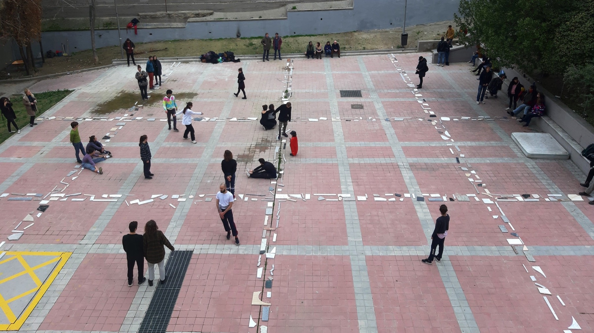
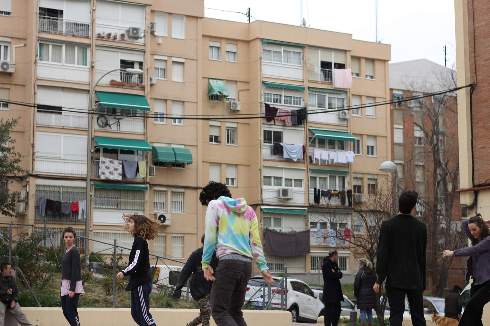
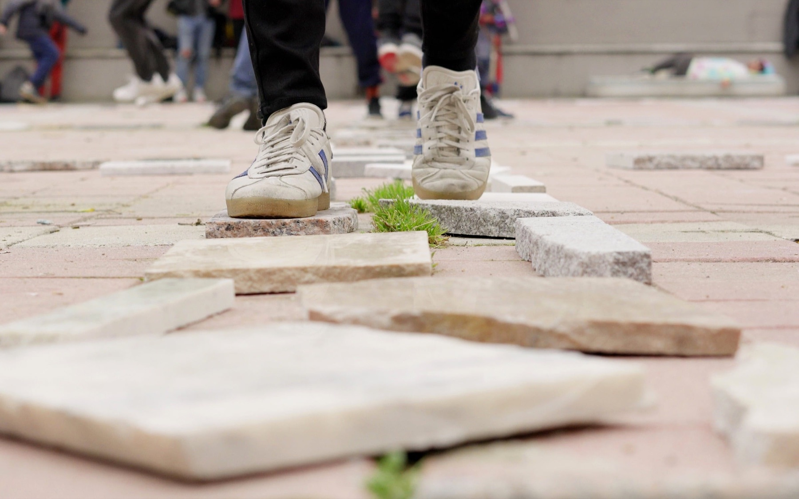
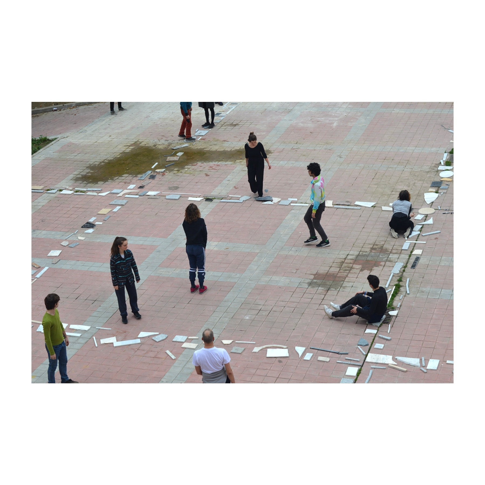
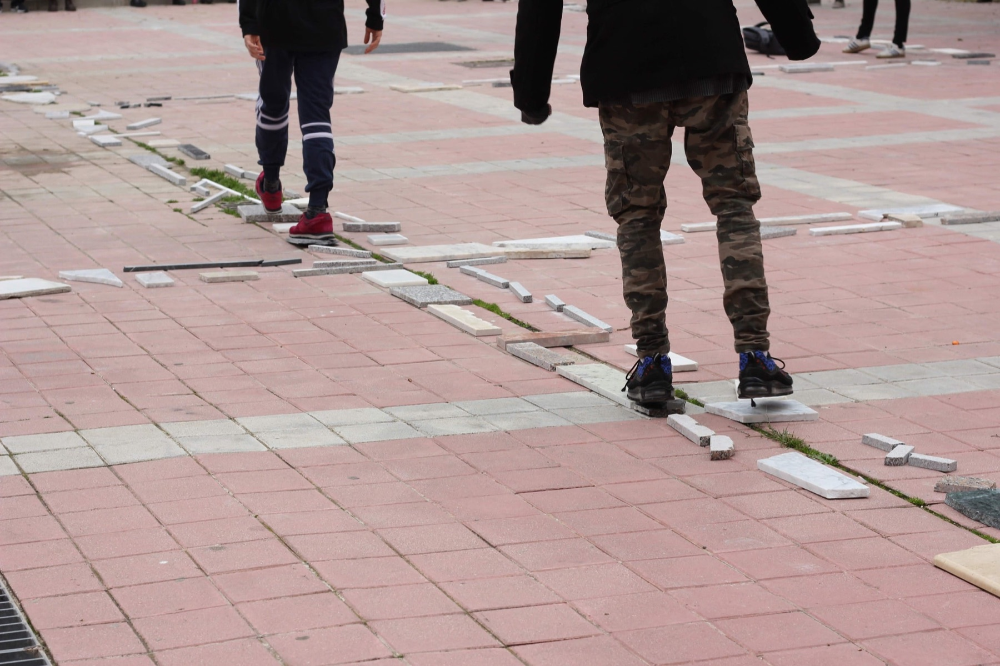

Obra2020
Plaza mármol
2 de febrero de 2020

A principios de 2020 trabajamos en colaboración con Basurama en el barrio de La Elipa, en Madrid. Durante esas semanas, descubrimos un lugar sin nombre. Una plaza entre tres bloques de viviendas y un gran muro. Un espacio vacío sin ninguna práctica establecida, pero receptivo a ser apropiado y cambiante.
Dedicamos tiempo a estar, a observar, a charlar con la gente que por allí cruzaba, pero rara vez se detenía. Hablamos mucho de las marmolerías que llenaban antiguamente el barrio, de las que hoy solo sobreviven unas pocas. Las visitamos y conseguimos llenar un par de furgonetas con sus retales.
Nos organizamos para apropiarnos por una mañana de este no lugar. Vinimos a reunirnos y expresarnos. Vecinas, bailarinas, actrices, artistas... Personas que entendemos la calle como el espacio donde compartir el arte en comunidad.
el material como memoria
el cuerpo como generador de geografías
el juego como vínculo con el espacio
la calle como lugar de expresión
- Dimensiones
- 2 x 2500 x 2000 cm
- Materiales
- Retales de mármol
- Agradecimientos
- Basurama, Madrid Street Art Project, marmolerías del barrio de La Elipa
- Fotos
- Sara Mateu



